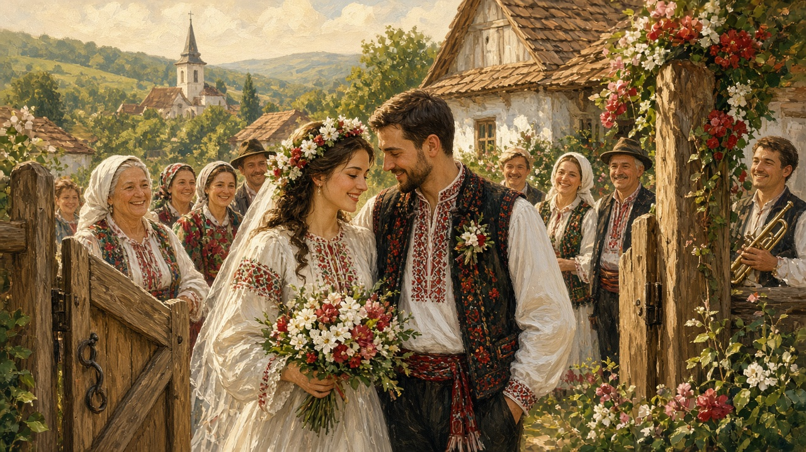

Wedding
Nunta. Not a hotel package. The day that still means two houses stood up in public, whether the tables sat in a yard or a hall.

Asking, and the nași
Before the day there is still an asking. Cererea — a visit to the girl’s house, or the quieter modern version over coffee — is how the families admit the thing is real. The older talk that leads to that visit — dor, the gate, a blessing — sits on romance. What lasts after that, in a lot of houses, is the choice of nași: the wedding godparents. They are not only witnesses on a form. They stand with the couple at the crowning, they often lead the first dance, they speak when a speech is needed, and they stay in the family the way baptismal nași stay. People still argue, gently or not, about who is asked. A good naș is someone who can hold a room and a bill. That is said without shame.
Crowns, then the hall
The legal marriage is at the primărie, the town hall: signatures, a short speech, rings if they are using them there. Many couples still go on to cununia, the church crowning. The priest sets crowns — cununi — on the two heads, walks them in a small circle, and the nași stand close enough to keep those crowns from slipping. This page is not the rite. Belief and the mysteries sit on Orthodoxy. What a guest remembers is quieter: wax, shoes on stone, someone crying in the back, then the doors and the noise waiting outside.
Colaci, and what guests bring
The table wants bread that is not the weekday loaf. Colaci — twisted or round ritual breads — still appear at a nuntă, sometimes carried, sometimes set in front of the nași. The everyday loaf, and those shapes, sit on bread. Guests are met with pâine și sare in some yards; in others the welcome is already a glass and a line for photographs. Money goes on a gift table, or into an envelope with a name on it, or into the nași’s keeping for an hour. People still say dar, the gift, and they still compare, later, who came and what they left. That talk is as old as the feast.
The band and the circle
A nuntă without sound is only a meal. The taraf — the small band that plays the wedding — is the southern and Moldavian picture: violin in front, accordion, a țambal, a bass. Across the mountains the night may be two violins and the învârtita, the turning dance of the couple. The hora is the circle the whole table can enter. The sârba is how the same floor gets warm. Those names, and the instruments behind them, live on music. This page only needs the occasion: the band is hired for the day, it eats, it waits, it starts again after midnight, and someone who does not dance still knows when the hora has begun.
Yard or hall
In the village the feast still wants a yard. Tables under a tent, the poartă left open, the stove of the house working for people who will not all fit inside. A neighbor’s dog, a child asleep on two chairs, the band in a corner that is not quite a stage. The road fills the way it does for a name day or a funeral; that larger claim is on villages. In town the same beats move into a restaurant, a cămin cultural, or a hall booked a year ahead: primărie in the afternoon, church if they go, then a DJ who still has to play a hora or the room will feel wrong. City and sat both keep a version. The dress may be hired, the colaci may come from a shop, the nași may live in Italy and fly in for the weekend. The claim is the same: this household stood up in public, ate with the people who matter, and danced until the circle broke.